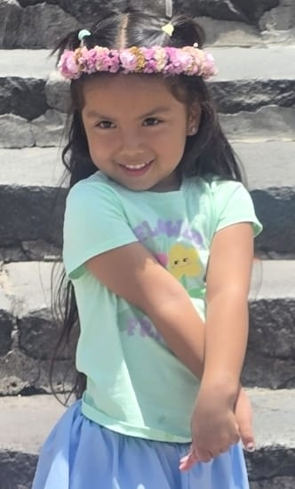

Dance World
Dance gives emotion a healthy language. Joyful routines, challenges and rehearsals kids can do at home.
Premature-heart survivor · Little Global Leader
Welcome to Emma's Play World — a children's movement of love, dance, creativity, courage and multicultural harmony. Emma makes joyful videos in many languages, helping kids believe that when we choose love, we create harmony.
A positive, family-friendly movement — parent-managed and multilingual.

Love Creates Harmony
Different rhythms. One heart.
 Add emma-graduation.jpg
Add emma-graduation.jpg
Meet Emma
Emma entered the world early and faced serious heart and pulmonary challenges. Her beginning was fragile — but her spirit was not. She survived, learned quickly, embraced many languages and cultures, and grew into a child who loves modeling, dancing and communicating joy.
Her story gives this movement its emotional truth: every child can turn a difficult beginning into a beautiful contribution. Emma isn't chasing fame — she's a little global leader using dance, kindness and creativity to bring children together.
Emma's manifesto
“I came into the world small, but my love is big. I dance because joy moves through me. I create because every child has something beautiful inside. We may speak different languages and come from different places — but when we choose love, we create harmony.”
— Emma
Explore
Dance gives emotion a healthy language. Joyful routines, challenges and rehearsals kids can do at home.
Children are builders, artists and dreamers. Crafts, fashion, imaginative play, drawing and storytelling.
Different roots can live in harmony. Phrases in many languages, world rhythms and multicultural celebrations.
Kindness creates safety and connection. Love notes, family moments and simple kindness missions.
Watch
Only parent-approved videos. New stories every week, in many languages. These are Emma's six signature formats.
The flagship campaign
Emma teaches an easy 8-count dance that ends with two hands forming a heart, then opening outward like a globe. Children and families perform it in the clothing, colors or music of their culture. The message: different rhythms, one heart.
A public celebration of participation — never children's private data.
Portfolio
Emma's Play World is a parent-managed children's movement seeking mission-aligned artists, choreographers, family brands and nonprofits for safe, age-appropriate collaboration.
Dedicated or integrated videos in any of Emma's languages.
Photo/video shoots, campaigns and family-event appearances.
Child-education, creativity or harmony campaigns with nonprofits and cultural groups.
Native access to multicultural family audiences across several languages.
Parent & safety
Because Emma is a minor, protection comes before every opportunity. We follow SAG-AFTRA young-performer guidance and COPPA privacy practices.
The Promise to Emma
We will help Emma's voice travel far without asking her to grow up too fast. We will protect the child while developing the leader — choosing integrity over attention, preparation over fantasy, and meaningful relationships over empty fame.
Partner with Emma
For partnerships, modeling, appearances, media and the Harmony Challenge. A parent/manager reviews and answers every message. All activity is parent-supervised and designed around child safety.